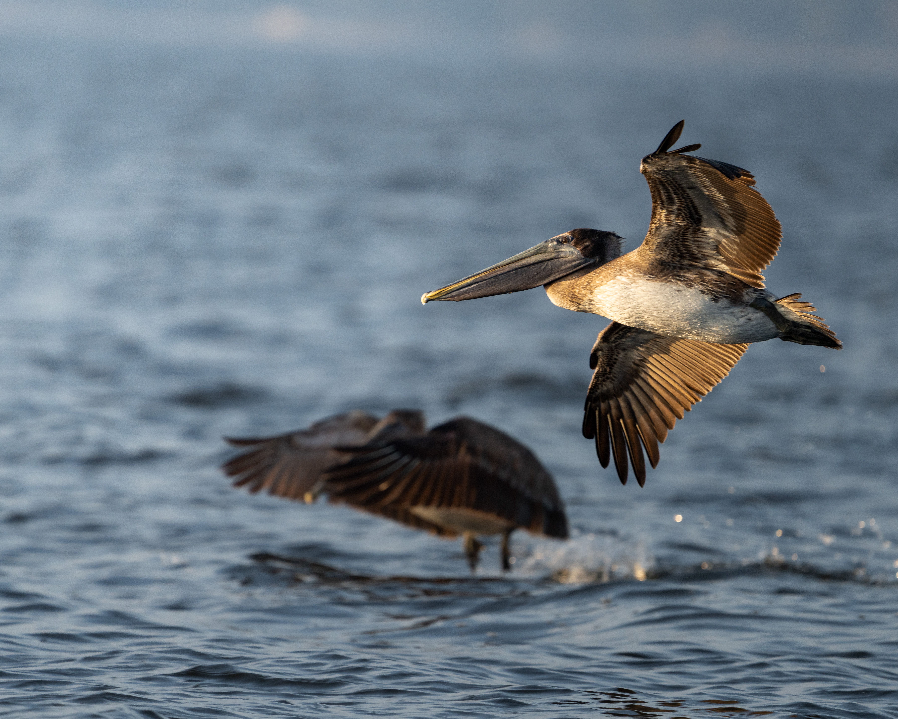

The Brown Pelican is a large coastal pelican with a long bill and an enormous expandable throat pouch. It is famous for plunge-diving from the air to catch fish, sometimes dropping from considerable height before entering the water. It is commonly seen along coasts, bays and estuaries.
Brown Pelican is best separated from American White Pelican by looking at the overall shape and the strongest plumage pattern rather than one small mark. Compared with American White Pelican, it has a different combination of colour, proportions and typical behaviour, which becomes clearer when the whole bird is visible. Australian Pelican can also resemble it in some settings, but differences in bill shape, tail length, wing pattern, posture or habitat can help narrow the identification. Calls and behaviour are useful supporting clues when plumage is difficult to see, especially for birds that spend much of their time in dense vegetation. Using several features together is more reliable than identifying the bird from a single characteristic.
BirdLife International — species factsheet and distribution, Cornell Lab of Ornithology — eBird species accounts and identification, Bombay Natural History Society — Indian bird research and conservation, IUCN Red List of Threatened Species — conservation status